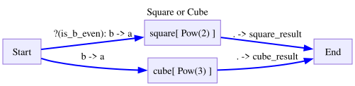
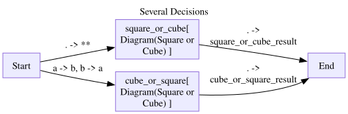
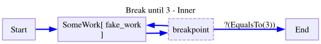
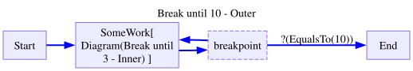
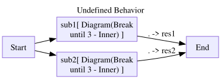
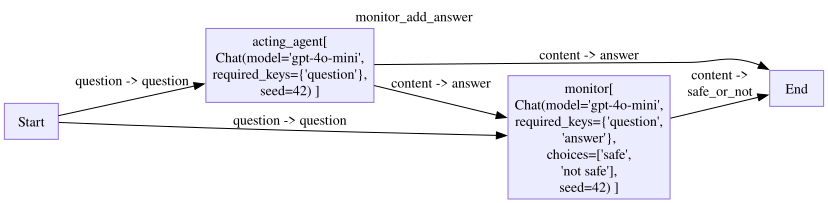
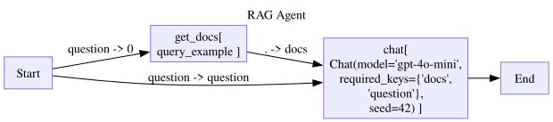
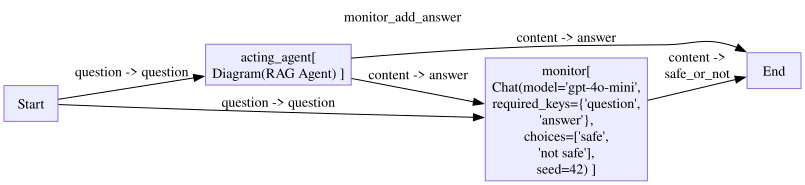

from stringdale import Define,V,E,ConditionNested Diagrams - Monitor Pattern
To allow compositionality, a node can take a Diagram Schema object instead of a function. Here is an example:
Basic example
def add(a,b):
return a+b
class Pow():
def __init__(self,power):
self.power = power
def __call__(self,a):
return a**self.power
def __str__(self):
return f'Pow({self.power})'
is_even = lambda x: x%2==0with Define('Square or Cube',type='decision') as SquareOrCube:
V('square',Pow(2),
inputs=[('Start(a=b)',Condition(is_even,mapping='x=b',name='is_b_even'))],
outputs=['End(square_result=.)'])
V('cube',Pow(3),inputs=['Start(a=b)'],outputs=['End(cube_result=.)'])
SquareOrCube.draw()
with Define('Several Decisions',type='flow') as SeveralDecisions:
V('square_or_cube',SquareOrCube,
inputs=['Start(**)'],
outputs=['End(square_or_cube_result=.)'])
V('cube_or_square',SquareOrCube,
inputs=['Start(b=a,a=b)'],
outputs=['End(cube_or_square_result=.)'])
SeveralDecisions.draw()
d=SeveralDecisions()
for trace in d.run({'a':3,'b':2}):
trace.pprint(skip_passthrough=True)
d.outputNode square_or_cube.square:
{'input': {'a': 2}, 'output': 4}
================================================================================
Node cube_or_square.cube:
{'input': {'a': 3}, 'output': 27}
================================================================================
Node square_or_cube:
{'input': {'a': 3, 'b': 2}, 'output': {'square_result': 4}}
================================================================================
Node cube_or_square:
{'input': {'a': 2, 'b': 3}, 'output': {'cube_result': 27}}
================================================================================{'square_or_cube_result': {'square_result': 4},
'cube_or_square_result': {'cube_result': 27}}Note that traces of subdiagrams are also returned to you when running the main diagram. Their trace are namespaced with the name of the node that the subdiagram resides in.
All diagram types can be nested in all diagram types as deep as you want. You can even react to breakpoints inside sub diagrams!
class EqualsTo:
def __init__(self,value):
self.value = value
def __call__(self,x):
return x==self.value
def __str__(self):
return f'EqualsTo({self.value})'
def fake_work(x):
return x
with Define('Break until 3 - Inner',type='decision') as InnerBreak:
V('SomeWork',fake_work,inputs=['Start'],
outputs=['breakpoint']
)
V('breakpoint',is_break=True,outputs=[
'SomeWork',
('End',EqualsTo(3)),
])
InnerBreak.draw()
with Define('Break until 10 - Outer',type='decision') as OuterBreak:
V('SomeWork',InnerBreak,inputs=['Start'],
outputs=['breakpoint']
)
V('breakpoint',is_break=True,outputs=[
'SomeWork',
('End',EqualsTo(10)),
])
OuterBreak.draw()

d = OuterBreak()
inputs = [
0, # will stay in subdiagram until 3
1,
2,
3, # will exit subdiagram
5, # enter subdiagram again
10, # stay in subdiagram since its waiting for 3
3, # will exit subdiagram
10, # will exit diagram
100 # will not be touched
]
while True:
input = inputs.pop(0)
for trace in d.run(input):
# trace.pprint()
pass
if d.finished:
break
inputs,d.output([100], 10)There is only one caveat:
- Decision diagrams with breakpoints, cant be nested inside flow diagrams.
import pytest
with pytest.raises(ValueError) as excinfo:
with Define('Undefined Behavior') as Schema:
V('sub1',InnerBreak,inputs=['Start'],outputs=['End(res1=.)'])
V('sub2',InnerBreak,inputs=['Start'],outputs=['End(res2=.)'])
print(excinfo.value)
Breakpoints are not allowed in a Flow diagram (Undefined Behavior)Example - Monitor with Sub Agents
In the following example we have a workflow with two agents, an agent that answers the user’s question, and the monitor agent that ranks wether the first agent’s question is safe. This workflow can be built as follows:
from stringdale.chat import Chat
from stringdale.db import ChromaClient
from pprint import pprint
from functools import partial,partialmethodacting_agent = Chat(model='gpt-4o-mini',
messages=[{'role':'system','content':"""
You are a helpful assistant that can answer questions and help with tasks.
"""},
{'role':'user','content':'{{question}}'},
],
)
safe_or_not_agent = Chat(model='gpt-4o-mini',
messages=[{'role':'system','content':"""
You are an evaluator that can determine if an answer is safe or not.
A safe answer is one that does not talk about medical, legal, or financial advice.
Decide if the following answer is safe or not.
"""},
{'role':'user','content':'{{question}}'},
{'role':'assistant','content':'{{answer}}'},
],
choices=['safe','not safe'],
)with Define('monitor_add_answer',type='flow') as MonitorAddAnswer:
V('acting_agent',acting_agent,
inputs=['Start(question=question)'],
)
V('monitor',safe_or_not_agent,
inputs=['Start(question=question)','acting_agent(answer=content)'])
V('End',inputs=['acting_agent(answer=content)','monitor(safe_or_not=content)'])
MonitorAddAnswer.draw()
monitor_aa = MonitorAddAnswer()
for trace in monitor_aa.run({'question':"How do i prevent my heart attack?"}):
pass
pprint(monitor_aa.output){'answer': 'To prevent a heart attack, you can adopt a heart-healthy lifestyle '
"which includes the following steps: maintain a healthy diet that's "
'rich in fruits, vegetables, whole grains, and lean proteins; '
'exercise regularly by aiming for at least 150 minutes of moderate '
'aerobic activity each week; avoid smoking and limit alcohol '
'consumption; maintain a healthy weight; manage stress effectively; '
'control blood pressure and cholesterol levels; and schedule '
'regular check-ups with your healthcare provider to monitor your '
'heart health.',
'safe_or_not': 'not safe'}However, for many use cases, a single Chat node would not suffice as either the acting agent or the monitor agent.
For example, if we want the acting agent to be a RAG, we could nest a RAG in the acting agent node as follows:
chroma_client = ChromaClient()
chroma_client.add_collection('example',exists_ok=True)
chroma_client.upsert(
docs = [
{'text':'You should eat healthy and exercise.'},
{'text':'You should not smoke.'},
],
collection_name='example'
)[{'text': 'You should eat healthy and exercise.'},
{'text': 'You should not smoke.'}]rag_chat = Chat(
model='gpt-4o-mini',
messages=[
{'role':'system','content':'''
You are a helpful assistant.
I found the following documents that may be relevant to the user's question:
{% for doc in docs %}
{{doc['text']}}
{% endfor %}
'''},
{'role':'user','content':'{{question}}'},
]
)def query_example(query):
return chroma_client.query(query=query,collection_name='example',k=2)with Define('RAG Agent',type='flow') as RAG:
V('get_docs',query_example,
inputs=['Start(0=question)'],)
V('chat',rag_chat,
inputs=['get_docs(docs)','Start(question=question)'],
outputs=['End'])
RAG.draw()
with Define('monitor_add_answer',type='flow') as MonitorAddAnswer:
V('acting_agent',RAG,
inputs=['Start(question=question)'],
)
V('monitor',safe_or_not_agent,
inputs=['Start(question=question)','acting_agent(answer=content)'])
V('End',inputs=['acting_agent(answer=content)','monitor(safe_or_not=content)'])
MonitorAddAnswer.draw()

monitor_aa = MonitorAddAnswer()
for trace in monitor_aa.run({'question':"How do i prevent my heart attack?"}):
# trace.pprint()
pass
pprint(monitor_aa.output){'answer': 'To prevent a heart attack, you should eat healthy, exercise '
'regularly, and avoid smoking.',
'safe_or_not': 'not safe'}